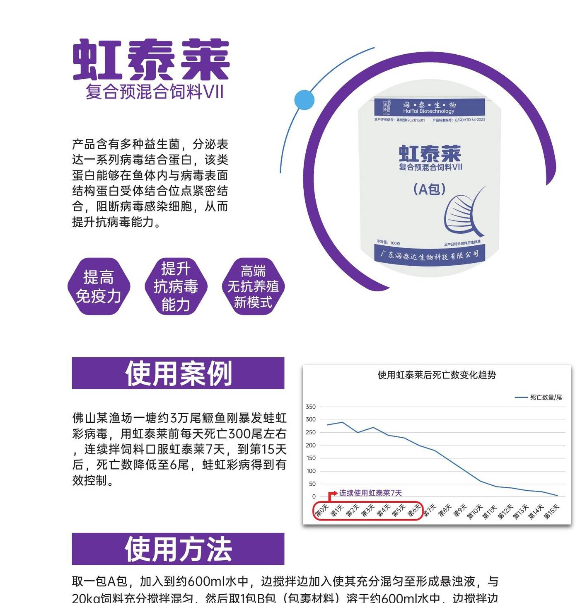

针对鳜鱼、鲈鱼蛙虹彩病毒（RSIV）的病毒结合蛋白产品。连续拌饲料口服 5-7 天，临床观察案例显示死亡数显著下降、病毒转阴。A viral receptor-binding protein product targeting ranavirus iridovirus (RSIV) in mandarin fish (Siniperca chuatsi) and sea bass. Administered orally in feed for 5–7 consecutive days; clinical observations show markedly reduced mortality and viral clearance.
来自养殖一线与临床使用的真实效果记录。Real efficacy records from aquaculture farms and clinical use.
鳜鱼养殖暴发蛙虹彩病毒，用虹泰莱前每天死亡约 300 尾。A mandarin fish farm hit by ranavirus iridovirus; before using HongTaiLai, approx. 300 fish died per day.
连续拌饲料口服 7 天。Administered orally in feed for 7 consecutive days.
第 15 天后死亡数降低至 6 尾，蛙虹彩病得到有效控制。By day 15, mortality dropped to 6 fish per day, and the ranavirus iridovirus disease was effectively controlled.
300 → 6 尾/天300 → 6 fish/day虹彩病毒发病鲈鱼（CT 30.18），平均分 2 组，饲养条件一致。RSIV-infected sea bass (CT 30.18), split into two equal groups under identical husbandry.
实验组投喂虹彩病毒结合蛋白包裹饲料，每天一餐连续 5 天；观察 7 天后检测。Trial group fed iridovirus binding-protein-coated feed, one meal daily for 5 consecutive days; tested after 7 days of observation.
实验组 PCR 转阴（CT ≥45），平均存活率 65%；对照组仍为阳性（CT 31.668），存活率 35%。Trial group turned PCR-negative (CT ≥45) with average survival 65%; control remained positive (CT 31.668) with survival 35%.
存活率 65% vs 35%，CT 31.668 → ≥45Survival 65% vs 35%, CT 31.668 → ≥45虹彩病毒发病鲈鱼，平均分 2 组。RSIV-infected sea bass, split into two equal groups.
实验组投喂虹彩病毒结合蛋白包裹饲料，每天一餐连续 5 天；观察 5 天后检测。Trial group fed iridovirus binding-protein-coated feed, one meal daily for 5 consecutive days; tested after 5 days of observation.
实验组 PCR 转阴（CT ≥45），平均存活率 90%；对照组仍为阳性（CT 37.34），存活率 68%。Trial group turned PCR-negative (CT ≥45) with average survival 90%; control remained positive (CT 37.34) with survival 68%.
存活率 90% vs 68%，CT 37.34 → ≥45Survival 90% vs 68%, CT 37.34 → ≥45选择对应症状，直达推荐产品。Pick a symptom to jump to the recommended product.
1 包 A 包 + 1 包 B 包配 20kg 饲料。1 Packet A + 1 Packet B mixes with 20kg of feed.
说明书 5-7 天。佛山案例用到第 7 天后死亡数持续下降，观察期到第 15 天。Per label, 5-7 days. In the Foshan case, mortality kept dropping after day 7, with the observation period extending to day 15.
临床观察案例显示连续使用 7 天后死亡数明显下降。Clinical observation cases showed a marked drop in mortality after 7 consecutive days of use.
立即停止投喂，观察鱼体反应。Stop feeding immediately and observe the fish's response.